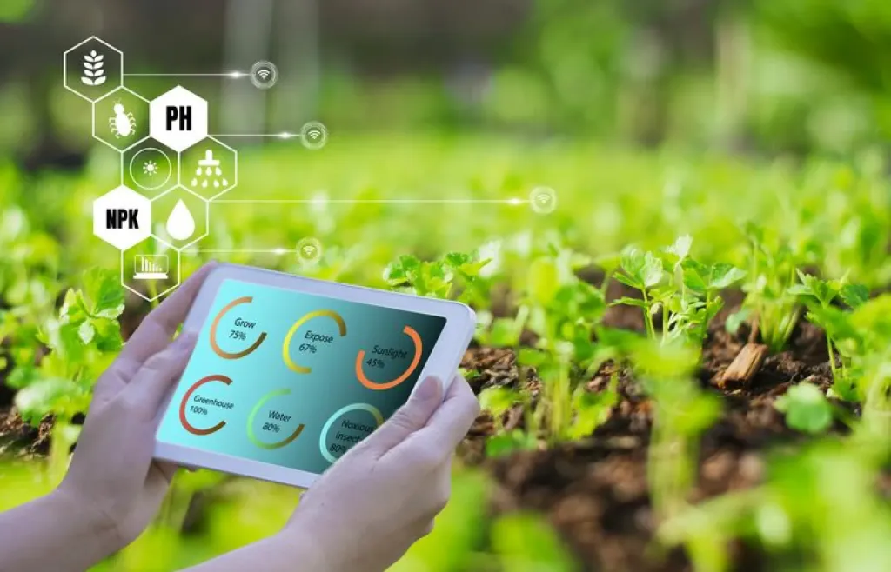
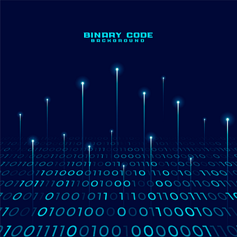
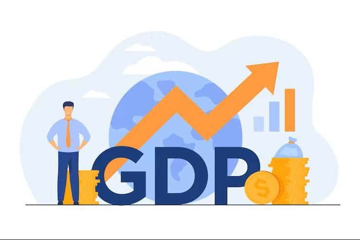

My Projects
Explore my latest projects in AI, Data Analytics, Machine Learning, Web Development, and Power BI.

🌱 Smart Agriculture System
AI-powered farming platform that predicts crops, monitors soil health, automates irrigation, and provides weather forecasting.
🌿 AYUSH Virtual Garden
Digital platform showcasing medicinal plants with their scientific names, health benefits, and traditional AYUSH uses.

🔍 Binary Search Visualizer
Interactive visualization tool that demonstrates Binary Search step by step with animation and algorithm explanation.

📊 Population Analysis Dashboard
Power BI dashboard analyzing population growth, demographics, gender ratio, and regional trends.

💹 GDP Analysis Dashboard
Interactive Power BI dashboard visualizing GDP growth, economic performance, and country-wise comparison.

📈 Euromart Sales Dashboard
Business intelligence dashboard analyzing sales, customer segments, profits, and regional performance.
🛒 Online Sales Dashboard
Dashboard providing insights into revenue, profit, sales trends, and customer purchasing behavior.

🏠 Housing Price Analysis
Interactive dashboard for housing market analysis, price trends, location comparison, and forecasting.